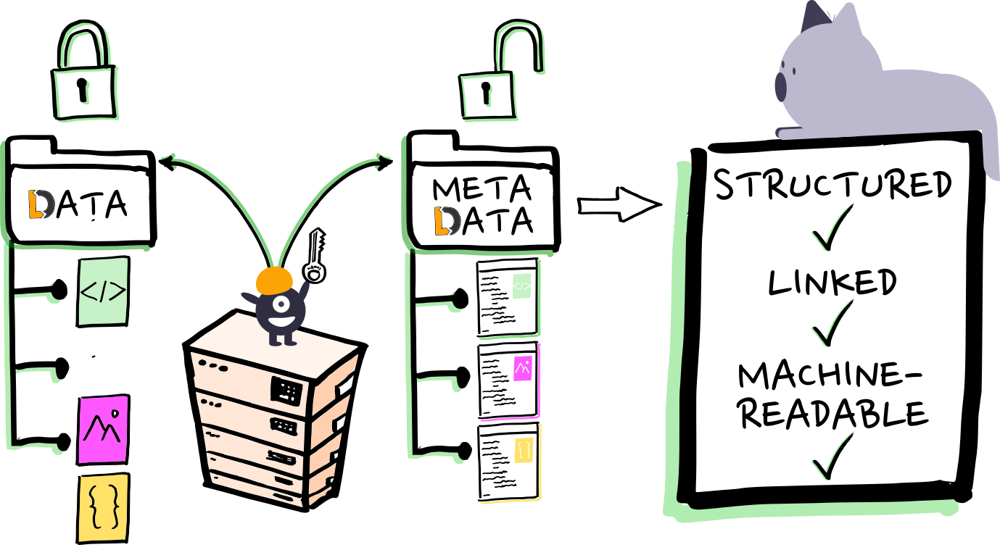

Publishing datasets with DataLad
Michał Szczepanik
SFB1451 mini-workshop, 23 Nov 2022
1. DataLad in research
1.1. Research process

Figure 1: The Turing Way project illustration by Scriberia. Used under a CC-BY 4.0 licence. DOI: 10.5281/zenodo.3332807.
1.2. What is DataLad
To make it short, DataLad is a software tool developed to aid with everything related to the evolution of digital objects.
It is not only keeping track of code, it is not only keeping track of data, it is not only making sharing, retrieving and linking data (and metadata) easy, but it assists with the combination of all things necessary in the digital workflow of data and science.
A brief overview of DataLad from DataLad Handbook
2. Pillars of DataLad
2.1. Local version control
- Know (record for your future self)
- when a given file was last changed
- where it came from
- what input files were used for a given output
- what is a short description of changes
- Have freedom of being able to return to a previously recorded state
2.2. Distribution
- keep places (laptop / desktop / remote server) in sync
- for work, backup or publication
- one interface for multiple, decentralized copies
- collaborate with others
2.3. Provenance tracking
- automated run records (what program, inputs, outputs)
- optionally, containerized environments
- re-execution (reproducibility)
- reproducibility strengthens trust
2.4. Metadata
- generic representations
- methods to extract, aggregate, display
3. Not just deposition
3.1. Reasons to move data
- backup
- exchange with collaborators
- publish
- make known that they exist
3.2. Data sharing nirvana
- Where data go to die? Data archive.
- How data are reincarnated? Re-used from archives.
- What makes re-use inconvenient?: Data bugs, ad hoc data access, crafty data format/organisation
– Yaroslav Halchenko, Towards the Big Data Neuroscience Nirvana
3.3. Sharing begins at home
Despite increasing efforts to encourage data sharing, both the quality of shared data and the frequency of data reuse remain stubbornly low. We argue here that a significant reason for this unfortunate state of affairs is that the organization of research results in the Findable, Accessible, Interoperable, and Reusable (FAIR) form required for reuse is too often deferred to the end of a research project, when preparing for publication—by which time essential details are no longer accessible.
Dempsey et al. (2022), Sharing Begins at Home: How Continuous and Ubiquitous FAIRness Can Enhance Research Productivity and Data Reuse, Harvard Data Science Review
4. DataLad features
4.1. Everything is explicit
datalad save -m "I made this" datalad push --to gin
4.2. Everything is versioned
❱ git log --pretty=reference 2e98e2c ([DATALAD RUNCMD] Convert to greyscale, 2022-05-23) 545bc9a (Add an image processing script, 2022-05-23) d9898ad (Add sidecar metadata to photos, 2022-05-23)
"Your dataset is 1 commit ahead, 2 commits behind"
No ambiguity
4.3. Lightweight datasets (annex content separation)

Figure 2: Share datasets without content (metadata) to balance privacy and visibility (drawing: Stephan Heunis)
4.4. Decentralization built in
datalad clone git@gitlab... git annex whereis this/file.dat -- usb drive #02 -- sciebo -- gin